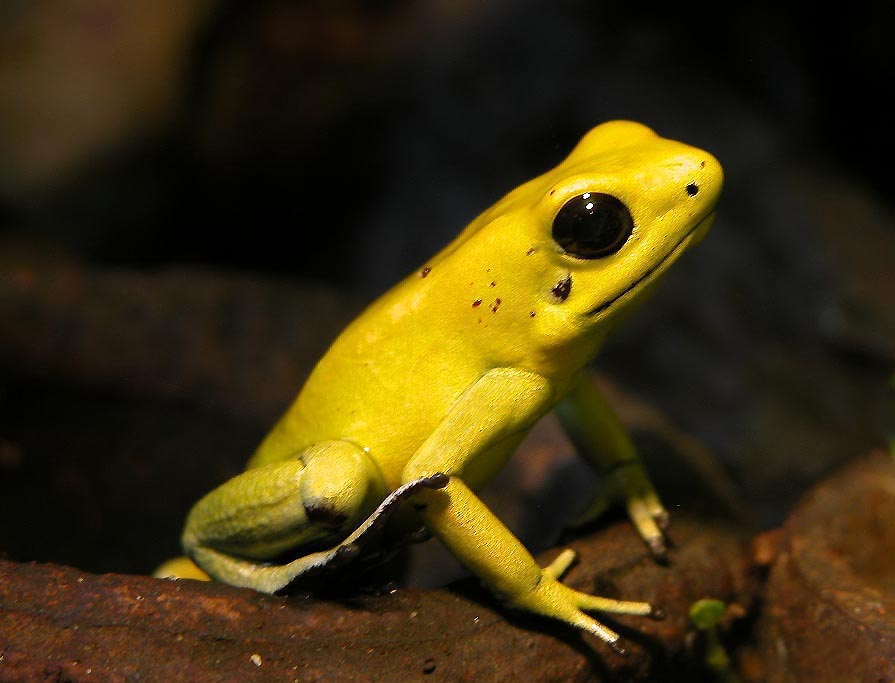

The most dangreous orF poinsonous frog in the world is the The golden poison frog (Phyllobates terribilis), also known as the golden dart frog or golden poison arrow frog, is a poison dart frog endemic to the rainforests of Colombia. The golden poison frog has become endangered due to habitat destruction within its naturally limited range. Despite its small size, this frog is likely the most poisonous animal on the planet.
The golden poison frog is the largest species of the poison dart frog family, and can reach a weight of nearly 30 grams with a length of 6 cm as adults.[7] Females are typically larger than males.[4] The adults are brightly colored, while juvenile frogs have mostly black bodies with two golden-yellow stripes along their backs. The black fades as they mature, and at around 18 weeks of age the frog is fully colored.[4] The frog's color pattern is aposematic (a coloration to warn predators of its toxicity).[8] Despite their common name, golden poison frogs occur in four main color varieties or morphs
